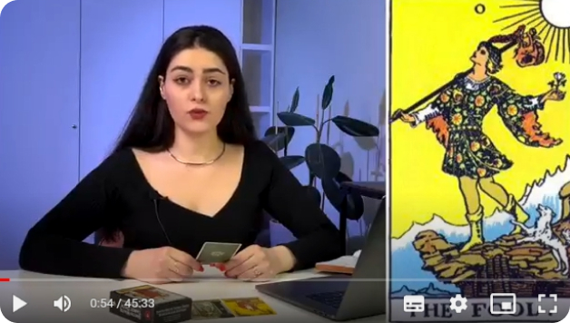
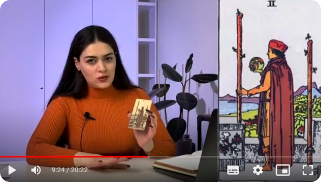
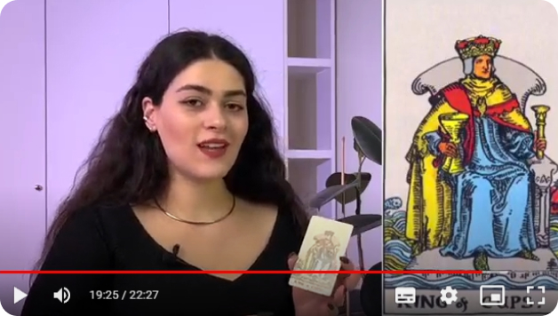
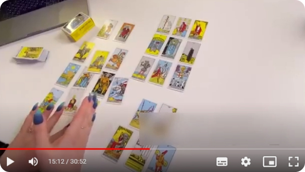

Новачки
Курс заснований на логіко-інтуїтивному способі читання карт - інформація засвоїться швидко та ефективно
Працюючий таролог
Акцент на поглибленні знань та практики, вивчення символіки кожного аркана та питань різної тематичної спрямованості. Досягнення детального та чіткого трактування
Ви хочете отримати нову професію
Ваша можливість відкрити для себе новий напрямок стабільного та високого прибутку
Ви хочете почати розуміти таро
Ви навчитеся передбачати майбутнє і осягати сьогодення. Таро - справжні відповіді на будь-які ваші запитання
Зможете легко знаходити відповіді на всі питання, що вас хвилюють
Освоїте інструмент, який допоможе вам орієнтуватися в будь-яких життєвих обставинах
Станете професійним тарологом та зможете заробляти від 30 000 грн на місяць
Набудете життєвого компаса, навігатора, зможете допомагати собі і людям знаходити виходи зі складних ситуацій
Виключіть повторення власних помилок, оскільки завдяки таро ви побачите свої фактори зростання та фактори ризику
Модуль 1
ЕНЕРГЕТИЧНЕ ПОНУРЕННЯ В ТАРО
Дод. Матеріали:
Модуль 2
ПІДГОТОВКА І ПРАВИЛА РОБОТИ З КАРТАМИ
Дод. Матеріали:
Модуль 3
СТАРШІ АРКАНИ ТАРО. БАЗОВІ РОЗКЛАДИ
Дод. Матеріали:
Модуль 4
МОЛОДІ АРКАНИ ТАРО. ВІРШІ ТА МАСТИНИ
Дод. Матеріали:
Модуль 5
ПРИДВІРНІ КАРТИ. НЮАНСИ РОБОТИ
Дод. Матеріали:
Модуль 6
ФОРМУВАННЯ І ЧИТАННЯ РОЗКЛАДІВ ТАРО
Дод. Матеріали:
Коли старт курсу?
Доступ до курсу надається одразу після оплати
Скільки триває курс?
Курс розрахований на 40-60 днів, в залежності від того, скільки часу ви готові приділяти навчанню
Протягом якого часу у мене буде доступ до курсу?
Доступ надається назавжди, без обмежень по часу. Всі уроки в запису, тож ви зможете навчатись в будь-який зручний час
Чи потрібно мені купляти щось додатково до курсу?
Тільки колоду Таро. Де і яку купити я розказую на першому уроці
Скільки потрібно приділяти часу навчанню?
Наш онлайн курс з Таро дає можливість освоїти мистецтво розкладання карт всього за кілька тижнів. Навчання допоможе вам швидко освоїти основи і почати використовувати Таро. Доступ до курсу довічний тому можете самі обирати інтенсивність навчання.